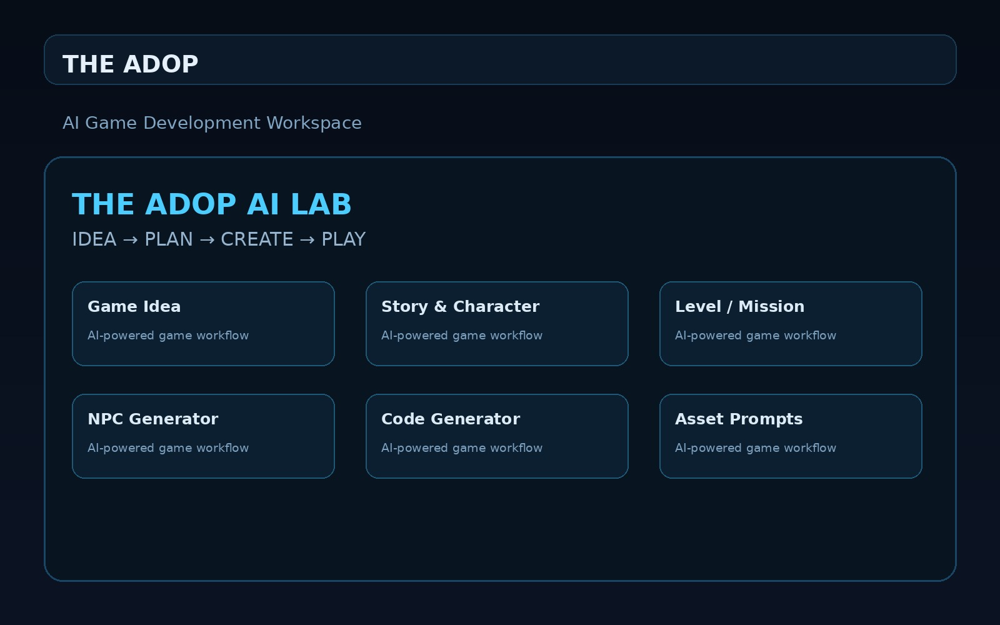

FEATURED PROJECT • 01
THE ADOP
AI Game Development Workspace
A personal AI-assisted workspace designed to turn game ideas into structured starting points — including stories, characters, missions, NPC concepts, code and asset prompts.
AI ToolsGame DesignStoryLevel DesignGodot
Open THE ADOP ↗